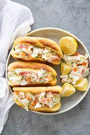

Artificial Crab Sandwich

Description
This sandwich will blow your head back, and at a fair price. You'll feel like a baller on a budget. People will look over at your meal and wonder how you could possibly afford that luxury in this disaster we call an economy. A gentleman never asks, a lady never tells.
Ingredients
- Artificial Crab Meat
- Miracle Whip
- Basil Pesto
- Green Onions
- Spinach
- Croissants
Directions
- Preheat a greased, cast-iron pan to medium heat. Add the artificial crab that you have selected. Cook 5-10 minutes until a healthy crab color.
- While the crab is reddening up, crack open your croissant, you can toast it or not, the choice is yours, but go ahead and toast it.
- Slather a dollop of Miracle Whip on that croissant. A dollop that makes you think "That may have been too much Miracle Whip".
- Next, you'll line that bad boy with basil pesto, spinach, and roughly chopped green onions, which are perhaps God's greatest invention.
- Dump that pan full of artificial crab meat into the eager folds of the croissant. Close it up, and pack a fork. You'll start this bad boy by hand, but I promise you'll need the fork.